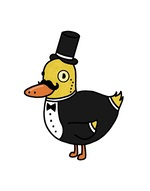

Wall Dash Tester
Measure time between button taps for Rocket League wall dashes.
Gamepad
Not connected
Press your controller’s A button. This page uses the Gamepad API; connect your controller and press any button once to wake it up.
Audio benchmark
Double-Tap Graph
≤ 85 ms
86–100 ms
101–150 ms
> 150 ms
Created by FancyDuck
